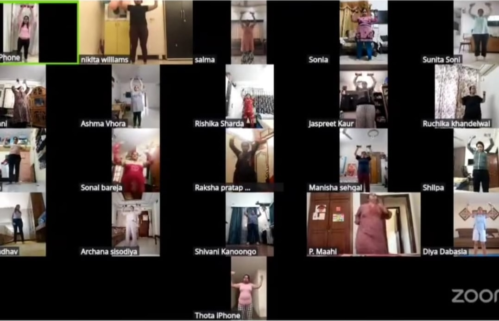
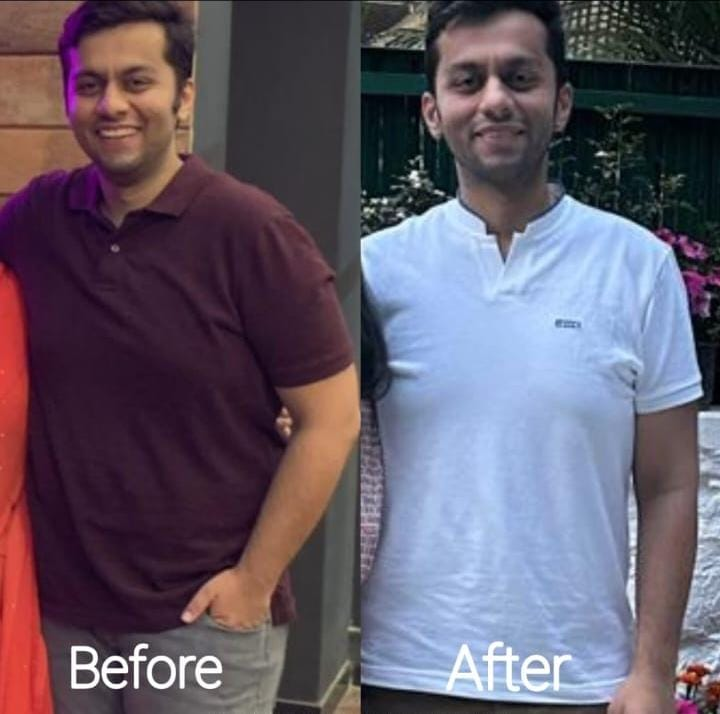

01 / PERSONAL
↗Built around you
Your food preferences, routines, culture, and goals are part of the plan from day one.
YOUR HEALTH, YOUR WAY
Nutrition that fits your real life. Thoughtful guidance, food you love, and small changes that make feeling better feel possible.
Real people. Real-life habits.Personal support, one step at a time


A kinder, more confident relationship with food starts here.
A LITTLE ABOUT ME
HEALTH COACH
Hi, I’m Anupama Purohit, PhD in Chemistry — a Health Coach with three years of experience at a Herbalife Nutrition Club.
My approach is centred on helping people build practical, sustainable nutrition and wellness habits that fit their everyday lives. Over the past three years, I have supported more than 15 clients with personalised guidance, encouragement, and a focus on consistent progress.
MY PHILOSOPHY
Nutrition is personal. Your plan should be, too. We'll work together to find an approach that feels good now and works for the long run.
Let's find your rhythm ↗Your food preferences, routines, culture, and goals are part of the plan from day one.
Flexible meal ideas and small habits that fit busy days, family meals, and changing schedules.
Friendly check-ins, thoughtful adjustments, and encouragement without guilt or judgement.
LET'S MEET
Choosing support is personal. Watch this short introduction to hear about my approach, what working together looks like, and how we can take your next step.
Have a question? Let's chat ↗Meet Anupama Purohit, your Health Coach.
WAYS WE CAN WORK TOGETHER
Choose the kind of guidance that feels right for you. Every plan starts with a conversation.

Personalised support around your goals, eating patterns, and day-to-day routine.
Explore this service ↗
Simple, flexible meal ideas shaped around your preferences, schedule, and needs.
Explore this service ↗
Regular conversations to celebrate wins, work through challenges, and adjust your plan.
Explore this service ↗Services are personalised after an initial conversation. Nutrition support does not replace medical diagnosis or treatment.
SIMPLE, SUPPORTIVE, PERSONAL
No complicated routines to master overnight. We'll take it one step at a time.
We start with a friendly conversation about your goals, preferences, and current routine.
Together, we shape a practical plan that works with your life and feels achievable.
We'll check in, learn what works, and make thoughtful changes as you go.
KIND WORDS, REAL EXPERIENCES
Thoughtful support, shaped around real life.

The guidance feels practical and personal. I no longer feel like I have to change everything at once; small changes have become easier to keep up with.
A FEW THOUGHTS ON WELLNESS
A gentle starting point for making everyday meals satisfying and varied.
Let's talk about it ↗Why manageable changes can feel more sustainable than an all-or-nothing reset.
Let's talk about it ↗
Simple planning ideas to make everyday food choices feel less stressful.
Let's talk about it ↗GOOD QUESTIONS
Here are a few things people often ask before getting started.
Ask another question ↗Yes. The process begins with understanding your goals, food preferences, routine, and relevant needs so the guidance can be tailored to you.
The aim is to build a flexible, balanced approach that fits your preferences and life, rather than relying on unnecessary restriction.
We can discuss your goals and practical next steps remotely. Use the contact section to enquire about current availability and format.
Share your situation when enquiring. Any nutrition support for a medical condition should be appropriate to your needs and coordinated with your qualified healthcare professional where necessary.
YOUR NEXT STEP STARTS HERE
Tell me a little about what you're looking for. We can start with a simple conversation — no pressure, just a place to begin.